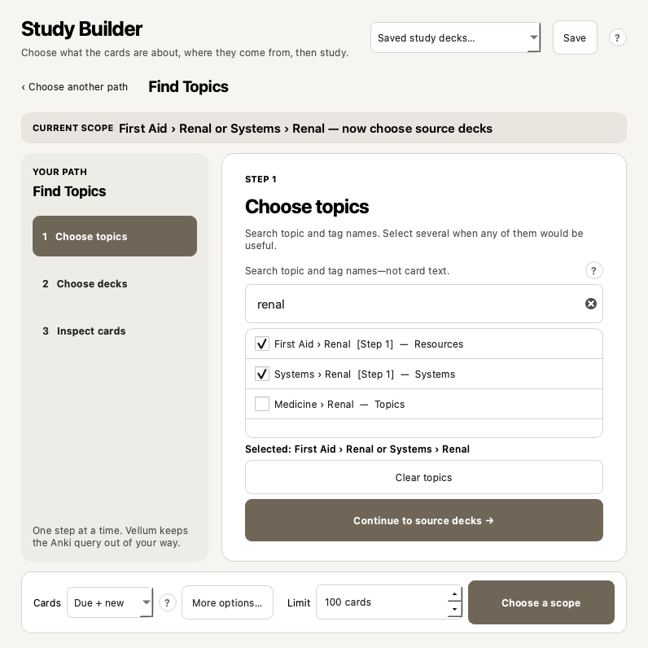
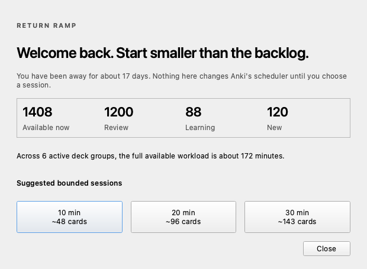
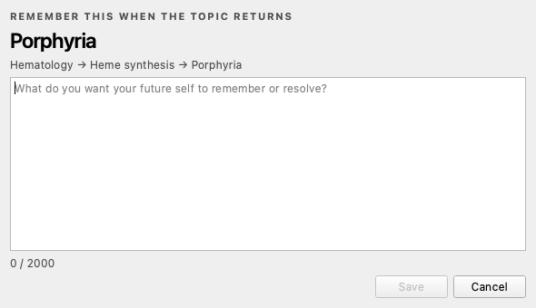
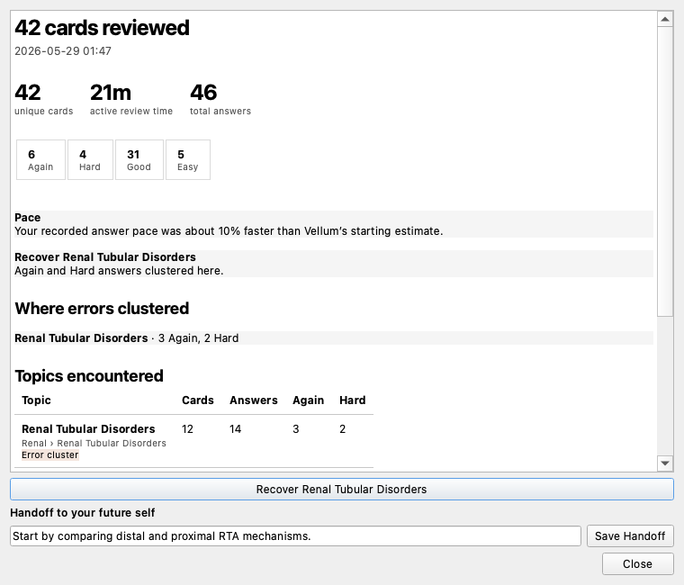

It uses your existing cards.
Your AnKing deck, school deck, or personal cards stay where they are. Vellum does not come with medical content and does not rewrite your notes.
Anki Desktop add-on · version 1.1.0
Say you want renal cards from First Aid and Pathoma, but only from AnKing. Vellum walks you through that in three screens, shows the cards it found, then lets Anki handle the studying.
AnkiWeb code
WHAT DO YOU WANT TO STUDY?
Anki and FSRS still schedule every answer.
What it is
I built it because making a precise filtered deck from a large medical collection was taking too many Browser searches and too much tag-tree clicking. The cards were already there. Getting the right ones into a study session was the annoying part.
Your AnKing deck, school deck, or personal cards stay where they are. Vellum does not come with medical content and does not rewrite your notes.
Start with topics and then choose their source decks, or start with decks and look through the tags found inside them.
Your choices become an Anki search. Vellum shows the result first, then creates a temporary native filtered deck if you press Build & Study.
You answer with Again, Hard, Good, and Easy as usual. FSRS, due dates, review history, and syncing are still handled by Anki.
Study Builder
Use the first when you know the topic. Use the second when you know the deck. You do not have to type a query such as (tag:A or tag:B) deck:C.
ROUTE 1 · START WITH THE MEDICAL TOPIC
Search “renal,” then check First Aid › Renal and Systems › Renal. Several topics here mean “any of these topics,” not the impossible requirement that every card has every selected tag.

How the selections combine
This means: find cards about Renal or Cardiology, but only if their home deck is AnKing or Medicine. A parent deck or tag includes its children. If you choose a specific child, Vellum removes the now-redundant parent selection.
The preview
The preview does not edit cards. It shows which cards can enter the session and which ones Anki will leave out.
Your example scope
The numbers above are an explanatory example. Vellum calculates the real numbers from your local collection when you choose a complete scope.
Collection safety
It does not need to delete cards, rewrite note fields, edit tags, or replace scheduling. It does create temporary filtered decks, and it can unsuspend selected cards if you explicitly ask it to. It is still software, so keep Anki's automatic backups enabled and export important collections occasionally.
user_files.The optional permanent action
Suspended cards remain visually separate and excluded by default. If you deliberately enable Unsuspend and include, Vellum shows the exact number, asks for confirmation, and unsuspends only the limited cards selected for that run. Those cards stay active afterward.
If deck creation fails before study begins, Vellum removes only the exact newly created deck and re-suspends exactly the cards it activated during that attempt.
If a build fails
Vellum also refuses to remove a deck if its saved identity no longer matches. An interrupted non-empty session stays resumable rather than being silently destroyed.
Other tools included
Each tool is optional and can be turned off on its own.
Shows the topic path for the card you are reviewing. Useful when a fact makes more sense once you know which system or chapter it came from.
Builds a short session for a topic that went badly. You can choose Quick, Standard, Full, or a custom size.
Tell Vellum how many minutes you have and which deck groups are allowed. It estimates a queue from your local answer times.
Resume an interrupted Vellum deck, or pick a smaller first session after several days away.
Write a private thought for your future self—such as “compare distal vs proximal RTA”—and see it when the topic returns.
Shows how many cards you did, active time, answer ratings, and the topics where Again and Hard answers clustered. It is a session report, not a mastery score.



AnKing V12
AnKing uses hierarchical tags because one card can belong to several topics and resources while living in only one deck. Vellum makes that structure browseable without asking you to memorize tag paths.
What you see
What Vellum safely keeps underneath#AK_Step1_v12::#FirstAid::14_Renal
Privacy
user_filessettings · session IDs · timing · recipes · text you deliberately writeCard questions, answers, note fields, rendered snippets, and media.
Identifiers, timings, ratings, topic metadata, exact temporary-deck manifests, recipe selectors, and text you deliberately write in Mind Notes or handoffs.
Nothing. There is no account, telemetry, analytics SDK, cloud backend, API key, or remote crash reporter.
Read the complete data guide →Testing
Locally qualifiedUnit, compilation, JavaScript, package integrity, Qt visual, disposable Anki-core, and isolated desktop startup checks on macOS.
Not claimedA completed real Windows 11 or Linux qualification matrix; coexistence with every third-party add-on; a guarantee that software can never contain a bug.
See CI runsRead the testsRead the qualification boundarySecurity policy
Install
Vellum 1.1.0 targets Anki Desktop 25.09.4 or newer. The current public qualification evidence is macOS-specific.
In Anki Desktop, open Tools → Add-ons → Get Add-ons…
Paste and install.
Restart Anki. Read the five-step Getting Started guide; every module is optional.
Open Builder in Anki’s top bar, choose one route, inspect the cards, then Build & Study.
Updates: AnkiWeb installs are offered updates through Anki’s add-on update check. A manually installed GitHub file is not attached to the AnkiWeb listing and must be updated manually.
Feedback
Useful criticism is welcome. Please describe what you tried, what you expected, and what actually happened. Do not attach your collection, card text, Mind Notes, or private profile data.
Report a reproducible bug, confusing behavior, or performance problem.
Open a report → Collection safetyRaise a concern about cards being moved, activated, restored, or cleaned up—even if you are asking before using the feature.
Raise a concern → Feature requestExplain the real study problem first. A proposed interface is helpful, but not required.
Request a feature → General feedbackShare what is useful, what is confusing, what you do not trust yet, or how you use AnKing and filtered decks.
Join the discussion →Contains private card data or a security/privacy vulnerability? Do not post it publicly. Use GitHub's private vulnerability report.
FAQ
No. Vellum builds scheduled, rescheduling-enabled filtered decks through Anki’s supported flow. Your Again/Hard/Good/Easy answer is still processed by Anki and FSRS. Vellum does not calculate replacement intervals or rewrite your scheduler configuration.
No. Anki temporarily assigns eligible cards to the filtered deck and keeps their original deck identity. When the deck is emptied or safely finished, they return home. Vellum records exact ownership so it does not delete a similarly named deck that it does not own.
Only when you explicitly enable Unsuspend and include and confirm the exact number. It unsuspends only the limited selected IDs. Those cards stay unsuspended after the session. If the build fails before study starts, Vellum re-suspends exactly the cards activated by that attempt.
They appear in separate availability counts and do not enter the new filtered deck. Vellum does not steal cards from another filtered deck or silently unbury them.
No. AnKing is the most tag-heavy use case, so it receives specialized local facet detection. Vellum also supports ordinary decks and subdecks, generic hierarchical tags, flat tags, Basic, Cloze, Image Occlusion, and custom note/card types.
Vellum’s interface and local continuity database are desktop-only. Card reviews and scheduling changes made through normal Anki study remain part of your Anki collection and follow Anki’s normal sync behavior. Vellum recipes, Mind Notes, and session history do not use a Vellum cloud and are not mobile features.
Preview snippets are rendered ephemerally for inspection and are not stored in Vellum’s database, logs, diagnostics, recipes, or debriefs. Vellum makes no external data requests and has nowhere to upload your collection.
Anki’s normal add-on removal removes the add-on code. Vellum-owned local data lives in its add-on area. Before uninstalling, finish or abandon any active Vellum-generated session from inside Vellum so Anki can return remaining cards home using the recorded manifest.
Yes. Always. Anki creates automatic backups, and important collections deserve an occasional manual export too. “Designed with rollback and ownership checks” is a safety architecture, not permission to stop backing up your work.
You can—and Vellum includes an Open in Browser handoff. The difference is workflow: the Browser is a powerful card-management tool, while Study Builder guides a narrower task: choose a meaningful scope, inspect availability, and start scheduled study without constructing search syntax.
Try it or inspect the code